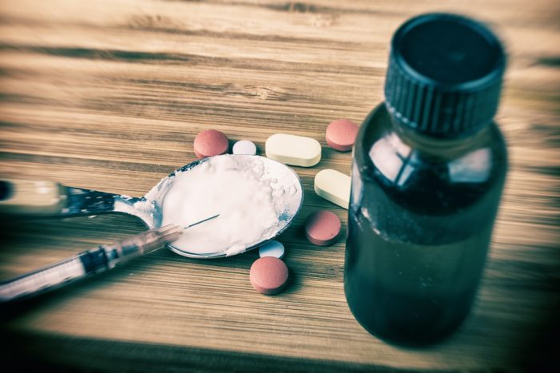

လိင်စိတ်ကြွဆေးများ အသုံးပြုပြီး လိင်ဆက်ဆံခြင်း

ဒီလို လိင်ဆက်ဆံတဲ့ အပြုအမူမျိုးကို ChemSex လို့ ခေါ်ပါတယ်။ တစ်နည်းအားဖြင့် ကာမစိတ်ကို နိုးကြားစေတဲ့ မူးယစ်ဆေးဝါးကဲ့သို့ ဆေးတွေ၊ ဓာတုဗေဒပစ္စည်းတွေကို အသုံးပြုပြီး အချိန်ကြာမြင့်စွာ လိင်ဆက်ဆံတာလို့လည်း သိကြပါတယ်။ ဒီအပြုအမူတွေကို အမျိုးသားတွေ အထူးသဖြင့် လိင်တူ သို့မဟုတ် လိင်တူလိင်ကွဲ ၂မျိုးလုံး ဆက်ဆံသော အမျိုးသားတွေ၊ နာရီ၊ ရက်ပေါင်းများစွာ လိင်စိတ်ကြွစေလိုတဲ့အခါ၊ အုပ်စုဖွဲ့ လိင်ဆက်ဆံခြင်း ပြုတဲ့အခါမျိုးမှာ လုပ်တတ်ကြပါတယ်။
မြန်မာနိုင်ငံမှာရော ဒီလိုလိင်ဆက်ဆံခြင်း အလေ့အထတွေ ခေတ်စားနေပြီလား။
လိင်တူဆက်ဆံသော အမျိုးသားတွေ၊ ပုံမှန်အတိုင်း လိင်ဆက်ဆံရမှာကို မနှစ်သက်တဲ့ အမျိုးသားတွေကြားမှာ ဒီအပြုအမူဟာ သိပ်ကို ရေပန်းစားပါတယ်။ မြန်မာနိုင်ငံမှာလည်း ထိုနည်းတူပါပဲ။ လူသိနည်းကြပေမယ့် ကြားဖူးနားဝရှိတတ်တာကြောင့် ဒီလို လိင်ဆက်ဆံရတာကို သဘောကျနှစ်ခြိုက်တဲ့သူတွေ ရှိသလို အပြစ်တင်ရှုံ့ချပြီး လုံးဝဆန့်ကျင်တဲ့သူတွေလည်း ရှိနေပါတယ်။ အထူးသဖြင့် လိင်မှုကိစ္စ အတွက်သီးသန့်ချိန်းတွေ့ကြတဲ့အခါမှာ အသုံးပြုလေ့ရှိပါတယ်။
ဘယ်လိုပစ္စည်းတွေကို အသုံးပြုလေ့ရှိလဲ။
၁။ Mephedrone – သုံးစွဲသူတွေရဲ့ စိတ်ကို နိုးကြားတက်ကြွစေတယ်။ ကာမဆက်ဆံလိုတဲ့ စိတ်ထွက်ပေါက်အဖြစ် အသုံးပြုလေ့ရှိပြီး သုံးစွဲလိုက်တဲ့အခါ စိတ်ထဲမှာ အတားအဆီး၊ စိတ်ဖိစီးမှုတွေ လုံးဝမခံစားရစေဘဲ လွတ်လွတ်လပ်လပ်၊ အကြမ်းပတမ်း လိင်ဆက်ဆံချင်စိတ်ကို ဖြစ်စေတယ်။ တစ်ကိုယ်လုံးမှာ ရှိတဲ့ အာရုံကြောစနစ်ကို လှုံ့ဆော်ပေးသလို ဖြစ်သွားပြီး ကြွက်သားတွေကို ပြေလျော့စေကာ လိင်စိတ်ဆန္ဒ ပြီးမြောက်ရန် အချိန်ကို ကြာမြင့်စေတယ်၊ ကာမသုခတွေကို မြှင့်တင်ပေးတယ်၊ သက်လုံပိုကောင်းစေတယ်။
၂။ GHB/ GBL – ကိုယ့်ရဲ့ စိတ်အာရုံနဲ့ ကိုယ်ခန္ဓာကြွက်သားတွေကို ပြေလျော့စေပြီး စိတ်လွတ်ကိုယ်လွတ် ဖြစ်စေတယ်။ လူတစ်ယောက်ရဲ့ စိတ်အာရုံမှာ ချုပ်တီးထားတဲ့ အရှက်အကြောက်တွေ၊ အသိစိတ်တွေကို လျော့ကျစေပြီး လိင်ဆက်ဆံဖို့ တစ်ခုတည်းကိုသာ စိတ်အားထက်သန်စေတယ်။ အရက်သေစာ၊ တခြားသော မူးယစ်ဆေးဝါးတွေနဲ့ တွဲသုံးမိရင် အသက်အန္တရာယ်ကိုပါ ထိခိုက်စေသည်အထိ ပြင်းထန်နိုင်ပါတယ်။
၃။ Methamphetamine – Crystal သို့မဟုတ် ရေခဲ (Ice) အဖြစ် သိထားပြီး ဒီလိုလိင်ဆက်ဆံနေကျသူတွေ အသုံးအများဆုံးဆေးဖြစ်ပါတယ်။ သုံးစွဲသူတွေကို စိတ်အာရုံလန်းဆန်းစေပြီး ခွန်အားတက်ကြွစေတယ်။ ဆေးသုံးလိုက်တဲ့အခါ လူကို လေဟာနယ်ထဲ လွင့်မျောသွားစေပြီး စိတ်ကိုပေါ့ပါးလွတ်လပ်စေတယ်။
ဒီလို လိင်စိတ်ကြွစေတဲ့ ဓာတုပစ္စည်းတွေကို အသုံးပြုပြီး လိင်ဆက်ဆံလေ့ရှိကြတဲ့သူတွေမှာ အထက်မှာ ပြောခဲ့တဲ့ ဆေးအနည်းဆုံး တစ်မျိုးစီ သုံးပြီးမှ ဆက်ဆံတတ်ကြတယ်လို့ ဆိုထားပါတယ်။
ဒီဆေးတွေကို မူးယစ်ဆေးဝါးလို့ သတ်မှတ်လို့ရလား။
ဒီဆေးတွေကို မီးရှို့ပြီး ထွက်လာတဲ့အငွေ့တွေကို ရှူရှိုက်တာ၊ ဆေးထိုးအပ်ဖြင့် အကြောထဲ ထိုးသွင်းပြီး အသုံးပြုလေ့ရှိပါတယ်။ လိင်စိတ်ကို အလွန်အမင်းတက်ကြွစေပြီး စွဲလမ်းသွားစေတယ်။ ကိုယ့်ရဲ့ ဆင်ခြင်တုံတရား၊ ထိန်းချုပ်နိုင်စွမ်းတွေကို လျော့နည်းစေတဲ့အတွက် မူးယစ်ဆေးဝါးလို့ ယူဆလို့လည်း ရပါတယ်။ တခြားသော မူးယစ်ဆေးဝါးတွေနဲ့ ကွာတဲ့အချက်ကတော့ ဆေးသုံးပြီးမှ အကြောင်းရင်းမရှိဘဲ လိင်ဆက်ဆံတာမျိုး မဟုတ်ဘဲ လိင်ဆက်ဆံလိုတဲ့ ရည်ရွယ်ချက်တစ်ခုတည်းကြောင့် ဒီဆေးတွေကို အသုံးပြုတာဖြစ်ပါတယ်။ လိုတာထက် ပိုပြီး အသုံးပြုမယ်ဆိုရင် အသက်အန္တရာယ်ထိခိုက်စေနိုင်တဲ့အထိ ပြင်းထန်တဲ့အခြေအနေတွေလည်း ဖြစ်နိုင်ပါတယ်။
ဘယ်လိုလူတွေမှာ အများဆုံး အသုံးပြုကြလဲ၊ ဘာကြောင့်သုံးကြလဲ။
အမျိုးသမီးတွေထက် အမျိုးသားတွေမှာ ပိုပြီးအသုံးများတတ်ကြပါတယ်။ အထူးသဖြင့်
• လိင်တူ သို့မဟုတ် လိင်တူလိင်ကွဲ ၂မျိုးလုံးဆက်ဆံတဲ့အမျိုးသားတွေ
• စအိုအသုံးပြုပြီး လိင်တူဆက်ဆံတဲ့အခါ နာကျင်မှုနည်းစေဖို့
• စိတ်အာရုံ ပျံ့လွင့်စေမယ့်အရာတွေကို ခေါင်းထဲ မဝင်လာစေဘဲ လိင်ကိစ္စတစ်ခုတည်းကို အာရုံစိုက်နိုင်ဖို့
• ကြွက်သားတွေကို ပျော့စေပြီး လှုပ်ရှားရလွယ်ကူစေဖို့၊ ပေါ့ပါးသွက်လက်နေစေဖို့
• စိတ်ကို လေဟာနယ်ထဲ ရောက်နေသလို ပေါ့ပါးလန်းဆန်းစေဖို့
• နာရီ၊ ရက်တွေကြာတဲ့အထိ လိင်စိတ်ဆန္ဒ ကျမသွားစေဖို့
• လူအများကြီးနဲ့ လိင်ဆက်ဆံတဲ့အခါ သို့မဟုတ် တစ်ယောက်ပြီး နောက်တစ်ယောက် လိင်ဆက်ဆံတဲ့အခါ အသုံးပြုတတ်ကြပါတယ်။
ဘယ်လိုဘေးထွက်ဆိုးကျိုးတွေ ရှိနိုင်လဲ။
မူးယစ်ဆေးဝါးလို့ မသတ်မှတ်ဘူးဆိုရင်တောင် စိတ်ကြွစေတဲ့ ဓာတုဗေဒပစ္စည်းတွေနဲ့ ပါဝင်ဖွဲ့စည်းထားတဲ့အတွက် ဘေးထွက်ဆိုးကျိုးကတော့ အနည်းနဲ့ အများ ရှိနိုင်ပါတယ်။
• စိတ်ကို စွဲလမ်းသွားစေပြီး ဆေးမသုံးရ မနေနိုင်ဖြစ်မယ်။
• ဆေးမသုံးဘဲ လိင်ဆက်ဆံတဲ့အခါ တစ်ခုခု လိုအပ်နေသလို၊ စိတ်မပါတော့သလို ခံစားရမယ်။
• စားချင်စိတ်၊ အိပ်ချင်စိတ်ကို ထိန်းချုပ်လိုက်တဲ့အတွက် အာဟာရဓာတ်တွေ နည်းသွားပြီး ပိန်ချုံးလာမယ်၊ မျက်တွင်းနက်လာမယ်၊ ခံတွင်းပျက်မယ်၊ အသားအရေ မွဲခြောက်ခြောက် ဖြစ်မယ်၊ ညဘက်မှာ ကောင်းစွာပြန်အိပ်ပျော်ဖို့ကို အဟန့်အတားဖြစ်စေတယ်။
• ကိုယ်တွင်းကလီစာတွေနဲ့ အာရုံကြောစနစ် ပျက်စီးစေနိုင်တယ်။
• နေ့စဉ်ရက်ဆက် အသုံးပြုတဲ့အခါ ကျန်းမာရေးကို ထိခိုက်လာစေနိုင်တယ်။
• အသိစိတ်လွတ်သွားတာကြောင့် ကွန်ဒုံးမသုံးဘဲ လိင်ဆက်ဆံတာ အစရှိတဲ့ အန္တရာယ်များတဲ့ အပြုအမူတွေကို လုပ်ဖို့ တွန်းအားပေးလိုက်သလို ဖြစ်သွားတယ်။
• သွေးကြောတွေကို ကျယ်စေလို့ လိင်မှတစ်ဆင့် ရောဂါတွေ ကူးစက်နိုင်ဖို့ ပိုလွယ်နိုင်ပါတယ်။
• ဆေးအလွန်အကျွံ သုံးစွဲခြင်း (Overdose) ဖြစ်ပြီး အသက်အန္တရာယ်ထိခိုက်စေတဲ့အထိ ပြင်းထန်နိုင်ပါတယ်။
ဒီဆေးတွေကိုတော့ လက်ရှိ မြန်မာနိုင်ငံမှာ တရားမဝင်ဆေးတွေ အဖြစ် သတ်မှတ်ထားပြီးတော့ သုံးခြင်း မသုံးခြင်းကတော့ ကာယကံရှင်တွေရဲ့ စိတ်ဆန္ဒသဘောနဲ့သာ ဆိုင်ပါတယ်။ တတ်နိုင်ရင်တော့ ကိုယ့်ကျန်းမာရေးအတွက် အန္တရာယ်ရှိစေနိုင်တဲ့ အပြုအမူတွေကို မလုပ်တာအကောင်းဆုံးပဲလို့ နောက်ဆုံးအကြံပေးရင်း ဒီမှာပဲ နိဂုံးချုပ်လိုက်ပါတယ်။
Source- Ye Myo Myat